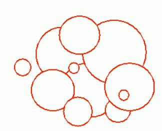
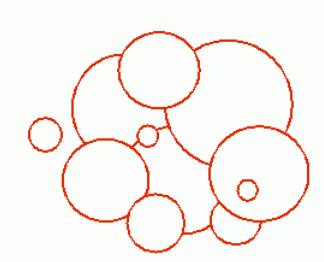

有n个圆盘从天而降，后面落下的可以盖住前面的。求最后形成的封闭区域的周长。看下面这副图, 所有的红
色线条的总长度即为所求. 
| F.A.Qs | Home | Discuss | ProblemSet | Status | Ranklist | Contest | 入门OJ | ModifyUser Xeonacid | Logout | 捐赠本站 |
|---|
| F.A.Qs | Home | Discuss | ProblemSet | Status | Ranklist | Contest | 入门OJ | ModifyUser Xeonacid | Logout | 捐赠本站 |
|---|
有n个圆盘从天而降，后面落下的可以盖住前面的。求最后形成的封闭区域的周长。看下面这副图, 所有的红
色线条的总长度即为所求. 
第一行为1个整数n,N<=1000
接下来n行每行3个实数,ri,xi,yi,表示下落时第i个圆盘的半径和圆心坐标.
最后的周长，保留三位小数